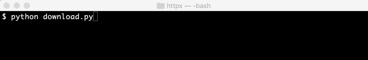
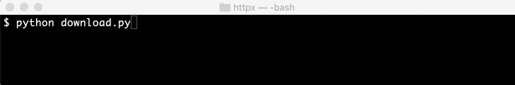

Clients
Hint
If you are coming from Requests, httpx.Client() is what you can use instead of requests.Session().
Why use a Client?
TL;DR
If you do anything more than experimentation, one-off scripts, or prototypes, then you should use a Client instance.
More efficient usage of network resources
When you make requests using the top-level API as documented in the Quickstart guide, HTTPX has to establish a new connection for every single request (connections are not reused). As the number of requests to a host increases, this quickly becomes inefficient.
On the other hand, a Client instance uses HTTP connection pooling. This means that when you make several requests to the same host, the Client will reuse the underlying TCP connection, instead of recreating one for every single request.
This can bring significant performance improvements compared to using the top-level API, including:
- Reduced latency across requests (no handshaking).
- Reduced CPU usage and round-trips.
- Reduced network congestion.
Extra features
Client instances also support features that aren't available at the top-level API, such as:
- Cookie persistence across requests.
- Applying configuration across all outgoing requests.
- Sending requests through HTTP proxies.
- Using HTTP/2.
The other sections on this page go into further detail about what you can do with a Client instance.
Usage
The recommended way to use a Client is as a context manager. This will ensure that connections are properly cleaned up when leaving the with block:
with httpx.Client() as client:
...
Alternatively, you can explicitly close the connection pool without block-usage using .close():
client = httpx.Client()
try:
...
finally:
client.close()
Making requests
Once you have a Client, you can send requests using .get(), .post(), etc. For example:
>>> with httpx.Client() as client:
... r = client.get('https://example.com')
...
>>> r
<Response [200 OK]>
These methods accept the same arguments as httpx.get(), httpx.post(), etc. This means that all features documented in the Quickstart guide are also available at the client level.
For example, to send a request with custom headers:
>>> with httpx.Client() as client:
... headers = {'X-Custom': 'value'}
... r = client.get('https://example.com', headers=headers)
...
>>> r.request.headers['X-Custom']
'value'
Sharing configuration across requests
Clients allow you to apply configuration to all outgoing requests by passing parameters to the Client constructor.
For example, to apply a set of custom headers on every request:
>>> url = 'http://httpbin.org/headers'
>>> headers = {'user-agent': 'my-app/0.0.1'}
>>> with httpx.Client(headers=headers) as client:
... r = client.get(url)
...
>>> r.json()['headers']['User-Agent']
'my-app/0.0.1'
Merging of configuration
When a configuration option is provided at both the client-level and request-level, one of two things can happen:
- For headers, query parameters and cookies, the values are combined together. For example:
>>> headers = {'X-Auth': 'from-client'}
>>> params = {'client_id': 'client1'}
>>> with httpx.Client(headers=headers, params=params) as client:
... headers = {'X-Custom': 'from-request'}
... params = {'request_id': 'request1'}
... r = client.get('https://example.com', headers=headers, params=params)
...
>>> r.request.url
URL('https://example.com?client_id=client1&request_id=request1')
>>> r.request.headers['X-Auth']
'from-client'
>>> r.request.headers['X-Custom']
'from-request'
- For all other parameters, the request-level value takes priority. For example:
>>> with httpx.Client(auth=('tom', 'mot123')) as client:
... r = client.get('https://example.com', auth=('alice', 'ecila123'))
...
>>> _, _, auth = r.request.headers['Authorization'].partition(' ')
>>> import base64
>>> base64.b64decode(auth)
b'alice:ecila123'
If you need finer-grained control on the merging of client-level and request-level parameters, see Request instances.
Other Client-only configuration options
Additionally, Client accepts some configuration options that aren't available at the request level.
For example, base_url allows you to prepend an URL to all outgoing requests:
>>> with httpx.Client(base_url='http://httpbin.org') as client:
... r = client.get('/headers')
...
>>> r.request.url
URL('http://httpbin.org/headers')
For a list of all available client parameters, see the Client API reference.
Request instances
For maximum control on what gets sent over the wire, HTTPX supports building explicit Request instances:
request = httpx.Request("GET", "https://example.com")
To dispatch a Request instance across to the network, create a Client instance and use .send():
with httpx.Client() as client:
response = client.send(request)
...
If you need to mix client-level and request-level options in a way that is not supported by the default Merging of parameters, you can use .build_request() and then make arbitrary modifications to the Request instance. For example:
headers = {"X-Api-Key": "...", "X-Client-ID": "ABC123"}
with httpx.Client(headers=headers) as client:
request = client.build_request("GET", "https://api.example.com")
print(request.headers["X-Client-ID"]) # "ABC123"
# Don't send the API key for this particular request.
del request.headers["X-Api-Key"]
response = client.send(request)
...
Monitoring download progress
If you need to monitor download progress of large responses, you can use response streaming and inspect the response.num_bytes_downloaded property.
This interface is required for properly determining download progress, because the total number of bytes returned by response.content or response.iter_content() will not always correspond with the raw content length of the response if HTTP response compression is being used.
For example, showing a progress bar using the tqdm library while a response is being downloaded could be done like this…
import tempfile
import httpx
from tqdm import tqdm
with tempfile.NamedTemporaryFile() as download_file:
url = "https://speed.hetzner.de/100MB.bin"
with httpx.stream("GET", url) as response:
total = int(response.headers["Content-Length"])
with tqdm(total=total, unit_scale=True, unit_divisor=1024, unit="B") as progress:
num_bytes_downloaded = response.num_bytes_downloaded
for chunk in response.iter_bytes():
download_file.write(chunk)
progress.update(response.num_bytes_downloaded - num_bytes_downloaded)
num_bytes_downloaded = response.num_bytes_downloaded

Or an alternate example, this time using the rich library…
import tempfile
import httpx
import rich.progress
with tempfile.NamedTemporaryFile() as download_file:
url = "https://speed.hetzner.de/100MB.bin"
with httpx.stream("GET", url) as response:
total = int(response.headers["Content-Length"])
with rich.progress.Progress(
"[progress.percentage]{task.percentage:>3.0f}%",
rich.progress.BarColumn(bar_width=None),
rich.progress.DownloadColumn(),
rich.progress.TransferSpeedColumn(),
) as progress:
download_task = progress.add_task("Download", total=total)
for chunk in response.iter_bytes():
download_file.write(chunk)
progress.update(download_task, completed=response.num_bytes_downloaded)

Monitoring upload progress
If you need to monitor upload progress of large responses, you can use request content generator streaming.
For example, showing a progress bar using the tqdm library.
import io
import random
import httpx
from tqdm import tqdm
def gen():
"""
this is a complete example with generated random bytes.
you can replace `io.BytesIO` with real file object.
"""
total = 32 * 1024 * 1024 # 32m
with tqdm(ascii=True, unit_scale=True, unit='B', unit_divisor=1024, total=total) as bar:
with io.BytesIO(random.randbytes(total)) as f:
while data := f.read(1024):
yield data
bar.update(len(data))
httpx.post("https://httpbin.org/post", content=gen())
Multipart file encoding
As mentioned in the quickstart multipart file encoding is available by passing a dictionary with the name of the payloads as keys and either tuple of elements or a file-like object or a string as values.
>>> with open('report.xls', 'rb') as report_file:
... files = {'upload-file': ('report.xls', report_file, 'application/vnd.ms-excel')}
... r = httpx.post("https://httpbin.org/post", files=files)
>>> print(r.text)
{
...
"files": {
"upload-file": "<... binary content ...>"
},
...
}
More specifically, if a tuple is used as a value, it must have between 2 and 3 elements:
- The first element is an optional file name which can be set to
None. - The second element may be a file-like object or a string which will be automatically encoded in UTF-8.
- An optional third element can be used to specify the
MIME type
of the file being uploaded. If not specified HTTPX will attempt to guess the MIME type based
on the file name, with unknown file extensions defaulting to "application/octet-stream".
If the file name is explicitly set to
Nonethen HTTPX will not include a content-type MIME header field.
>>> files = {'upload-file': (None, 'text content', 'text/plain')}
>>> r = httpx.post("https://httpbin.org/post", files=files)
>>> print(r.text)
{
...
"files": {},
"form": {
"upload-file": "text-content"
},
...
}
Tip
It is safe to upload large files this way. File uploads are streaming by default, meaning that only one chunk will be loaded into memory at a time.
Non-file data fields can be included in the multipart form using by passing them to data=....
You can also send multiple files in one go with a multiple file field form.
To do that, pass a list of (field, <file>) items instead of a dictionary, allowing you to pass multiple items with the same field.
For instance this request sends 2 files, foo.png and bar.png in one request on the images form field:
>>> with open('foo.png', 'rb') as foo_file, open('bar.png', 'rb') as bar_file:
... files = [
... ('images', ('foo.png', foo_file, 'image/png')),
... ('images', ('bar.png', bar_file, 'image/png')),
... ]
... r = httpx.post("https://httpbin.org/post", files=files)